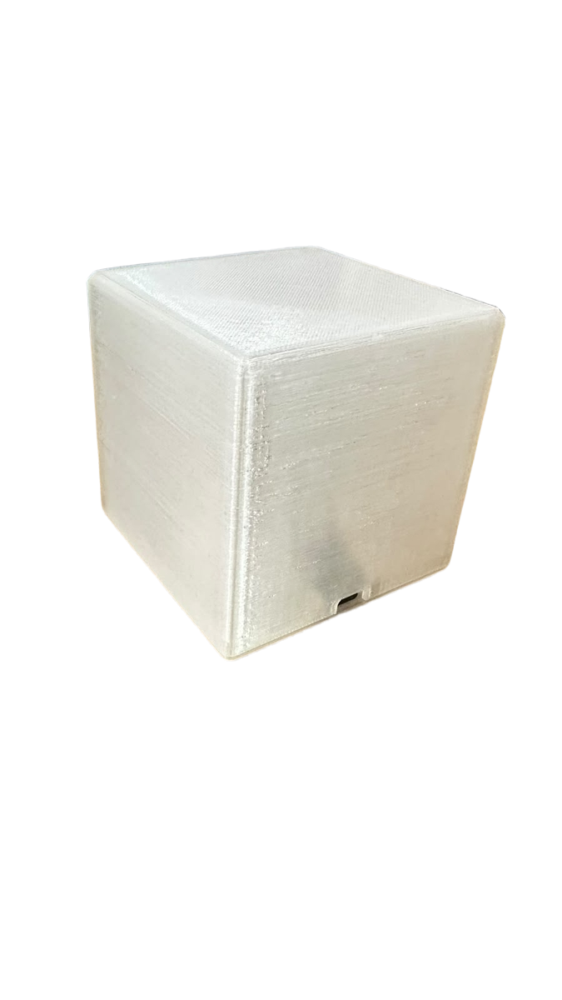
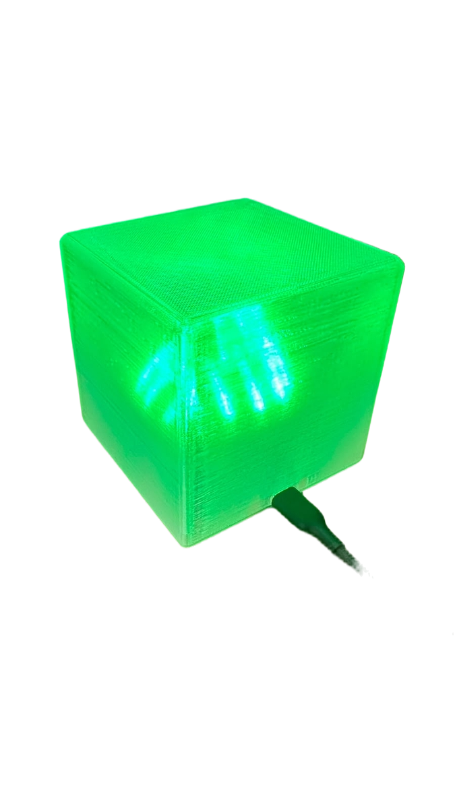

Concéntrate en lo que importa. Mide tu Deep Work, en local.
Cliente de escritorio ultraliviano que mide cuánto trabajas de verdad, con un cubo LED físico que te lo muestra en tiempo real y tus datos siempre contigo.
¿Buscas el plan corporativo B2B? Solicitar demo →

Un cubo sobre tu escritorio que te dice cómo vas
El dispositivo se conecta a tu equipo y te da retroalimentación en tiempo real sobre tu ritmo de trabajo, sin distracciones visuales complejas.
- 01
Conexión USB inmediata
Conecta el cubo y Modus Light lo detecta solo. La sincronización es local.
- 02
Indicador LED de flujo
El color cambia según tu nivel de enfoque, sin que tengas que mirar la pantalla.
- 03
Registro automático
Cuenta tus minutos de enfoque, tu meta diaria y tu racha de días seguidos.
- Verde disponible
- Amarillo enfocado
- Rojo Deep Work
- Azul distracción
Cero micro-management
Mide tu enfoque y tu racha sin guardar ni enviar lo que escribes, los títulos de tus ventanas ni capturas de pantalla.
Arquitectura local-first
Tus datos se guardan en tu equipo. Solo si tu empresa usa Modus PLUS se envían tus minutos de enfoque, con autenticación JWT.
Hardware integrado
Soporte nativo para cubos con anillos LED y microcontroladores por comunicación serial USB en tiempo real.
El mismo enfoque, para todo tu equipo
Un panel para gerencia con los minutos de enfoque de cada persona, sin espiar lo que hacen.
- Equipo en línea y minutos del día en tiempo real.
- Políticas de trabajo y lista negra definidas por la empresa.
- Detección de reportes imposibles (anti-trampa).
Solicita una demo
Cuéntanos el tamaño de tu equipo y te mostramos el panel funcionando.
moduslight2026@gmail.com